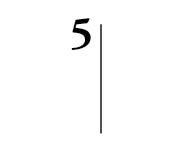
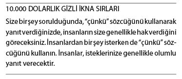
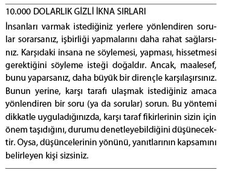
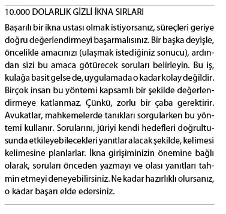

Gizli İkna Sözcükleri
Diğerlerinden daha ikna edici olduğu kanıtlanmış kimi sözcükler vardır. Aşağıda en ikna edici sözlerin bir listesini bulacaksınız. Sohbetlerinize hazırlanırken, argümanlarınızı, reklam metinlerinizi hazırlarken bu listeye göz atmanızda yarar vardır.
Sözcük seçimi, birçok insanın düşündüğünden çok daha önemlidir. Dilimizdeki en ikna edici 12 sözcük şunlardır:
Sen, para, kurtarmak, sonuç, sağlık, kolay, aşk, keşif, kanıtlanmış, yeni, güvenlik, garanti.
Pazarlama alanında çalışanlar bu 12 sözcüğe şunları da ekleyebilir:
Ücretsiz, evet, hızlı, neden, sır, satış, şimdi, güç, duyuru, kâr, çözüm.
Bunlar da hem satış ve pazarlama sektörlerinde hem de her türlü iletişimde kullanabileceğiniz sözcüklerdir:
Ünlü, ilerleme, büyüleyici, duyuru, çekici, nihayet, dikkat, özgün, dikkatli, pazarlık, çünkü, güçlendirici, devrim, rekabet, değişim, seçim, klasik, rahat, karşılaştırmak, tamamlamak, uyumlu, hazır, arzulamak, indirim, keşif, keşfetmek, sıra dışı, kolay, kolayca, verimli, enerji, özel, olağanüstü, hızlı, ücretsiz, taze, eğlenceli, garanti, iyileştirme, yardım, dürüst, kılavuz, acele, hayal etmek, önemli, gelişmiş, vazgeçilmez, inanılmaz, bilgilendirici, çabuk, samimi, sunan, akıl almaz, son şans, sevgi, lüks, büyülü, mucize, para, kazandıran, tasarruf, doğal, doğal olarak, yeni, şimdi, öneri, orijinal, aşmak, huzur, mükemmel, lütfen, memnuniyet, artı, popüler, güç, güçlü, pratik, önleyici, indirim, kazançlı, söz, kanıtlanmış, hızlı, fark etmek, önerilen, rahatlatıcı, rahatlama, güvenilir, bilimsel, gizli, güvenlik, çarpıcı, hizmet, kolaylaştırmak, gevşetmek, özel öneri, konum, durmak, coşturucu, çarpıcı, moda, üstün, garantili, şaşırtıcı, teşekkürler, güncel, gerçek, geleneksel, güvenilir, nihai, sınırsız, alışılmadık, yararlı, değerli, aranan, uyarı, sen, senin.


Bu sözcükleri, istediklerinizi daha sık bir oranda elde etmek amacıyla nasıl kullanabilirsiniz? Mektuplarda mı? Broşürlerde mi? Sözlü iletişimlerinizde mi? Vereceğimiz birkaç örnek, bu sözcükleri mesajınızı aktarmak amacıyla nasıl kullanabileceğinizi gösterecektir:
“Bilimsel olarak kanıtlanmış bu program, yaşamınızı sonsuza dek değiştirecek, kullanımı kolay üç teknik içermektedir.”
“Tasarruf yapmak ister misiniz?”
“Etkinliği kanıtlanmış bu teknolojinin sırlarını keşfetmek ister misiniz?”
Etkiyi artırmak istiyorsanız, bu sözcükleri kullandığınız sorular sorun. Sorularda büyük bir güç gizlidir. Anlatmak yerine soru sormayı başardığınızda, karşı tarafı motive etme konusunda ne kadar başarılı olabileceğinizi göreceksiniz. Bu yolla, o insanda size yardım etme isteği uyandıracaksınız.

Dönüşümsel Dilbilgisini Kullanın
İnsanların yaşamlarındaki deneyimlerini anlatmak amacıyla kullanmayı seçtiği sözcükleri dikkatle dinlerim. Bunu yaparken, insanların kullandığı sözcüklerin, o sıradaki duygularını da etkilediğini fark ettim. Bir başka ifadeyle, “Mahvoldum” dediğinizde, “Olayların nasıl bu hale geldiğini anlayamadım?” dediğiniz andakinden farklı şeyler hissedersiniz. Kullandığınız sözcükler hislerinize dönüşür. Zihninizi neye odaklarsanız, gerçekte de onu yaratırsınız. Sırf bu konuyla uğraşan bir psikoloji dalı vardır. Noam Chomsky, 1956’da geliştirdiği bu teoriye, “Dönüşümsel Dilbilgisi” adını vermiştir. Teori, basit bir temele oturtulmuştur: Kullandığınız sözcükleri değiştirirseniz, ruh haliniz de buna bağlı olarak değişir. Sözcüklerin gücünü anında hissedebilirsiniz. Sözcüklerinizi değiştirin, hisleriniz de değişsin.
Dönüşümsel Sözlük - Kişisel Değerlendirme
Aşağıdaki senaryoyu okuyun ve ardından sizin kararınıza/tepkinize/yanıtınıza/eyleminize en uygun şıkkı seçin. Bu yolla kendinizin ve hedefinizin düşünce biçimi hakkında birçok şey öğrenebilirsiniz.
Önemli bir şirket toplantısındasınız. Şirketin bir hata yaptığı, yeni üretilen Big Joe oyuncaklarının satmadığı açıklandı. Hatta, bazı çocuklar oyuncaklar yüzünden yaralandığı için aileleri şirkete karşı dava açtı. Zor bir dönemden geçiliyor. Bu yüzden, şirketi kurtarmak amacıyla, 4 bin çalışanın 500’ü işten çıkarılıyor. Siz ve arkadaşlarınız da bu 500 kişinin içindesiniz. Kafanızdan türlü türlü düşünceler geçiyor. Ne yaparsınız?
A. Sinirlenirsiniz. Bu şirkette beş yıldır tüm gücünüzle çalışıyorsunuz. Böyle mi teşekkür edeceklerdi? İşten çıkararak mı? Çok sağ olun! Peki, ya sadakat? Bu, hiç adil değil. İşten çıkarılmayanlar arasında birçok tembel insan var. Onlar neden kalıyor? Delirmek üzeresiniz.
B. Kendinize, neden işten çıkarılan 500 kişi arasında yer aldığınızı sorarsınız. Kendi kendinize, “Ne açıdan yetersizim?” dersiniz
C. Hemen yeni bir iş aramaya başlarsınız. Gizliden gizliye sevinmişsinizdir. Bu şirketi zaten hiç sevememiştiniz. Bu bir fırsat sayılabilir. Özgürlüğünüzü kazandınız. Bu konu hakkında düşündükçe, sizi bekleyen fırsatlar sizi daha da heyecanlandırıyor.
D. Arkadaşlarınızın tamamı bu kararın adaletsiz olduğuna hükmetti. Bir avukatla konuşarak dava açmaya karar verdiler. Toplu halde mahkemeye başvuracaklar. Tekrar işe alınmayı talep edecekler. Onlar konuştukça, siz de onlara daha fazla hak vermeye başlıyorsunuz. Size de haksızlık yapıldığını düşünüyorsunuz. Tekrar işe alınmak sizin de hakkınız. Siz de onlara katılıyorsunuz.
Bu olası tepkilerin hangisi size daha uygun, A mı, B mi, C mi yoksa D mi? Yapacağınız seçim, dünyayı algılayış biçiminiz hakkında çok şey anlatıyor olacak.
A: Öfkeli bir dünya görüşü - “Bana borçlular” anlayışı.
B: Sorgulama. Ancak, bunu kişisel bir mesele olarak değerlendiriyorsunuz.
C: Her işte bir hayır vardır yaklaşımı.
D: Yetkilendirme/Gruba adil davranılmalı/Sendika zihniyeti - “Bize borçlular”.
Ancak, nasıl tepki vereceğinizi, durumu hangi sözcüklerle ifade edeceğinizi kendinizin belirleyeceğini, aklınızdan çıkarmayın.
Ana fikir şudur: Yaşamınızdaki deneyimleri kendinize ve çevrenizdekilere anlatırken kullandığınız sözcükler, gerçek deneyimlere dönüşür. Dikkatinizi neye verdiğinizi, ilginizi nereye yönelttiğinizi kendiniz seçersiniz. Sözcükleri seçmekle hislerinizi de seçmiş olursunuz.
Ruh halinizi dönüştürücü sözcükler seçmeye gayret edin. Bu bölümün başındaki listeye başvurarak, bu sözcükleri günlük yaşamınızda olabildiğince kullanmaya çalışın.